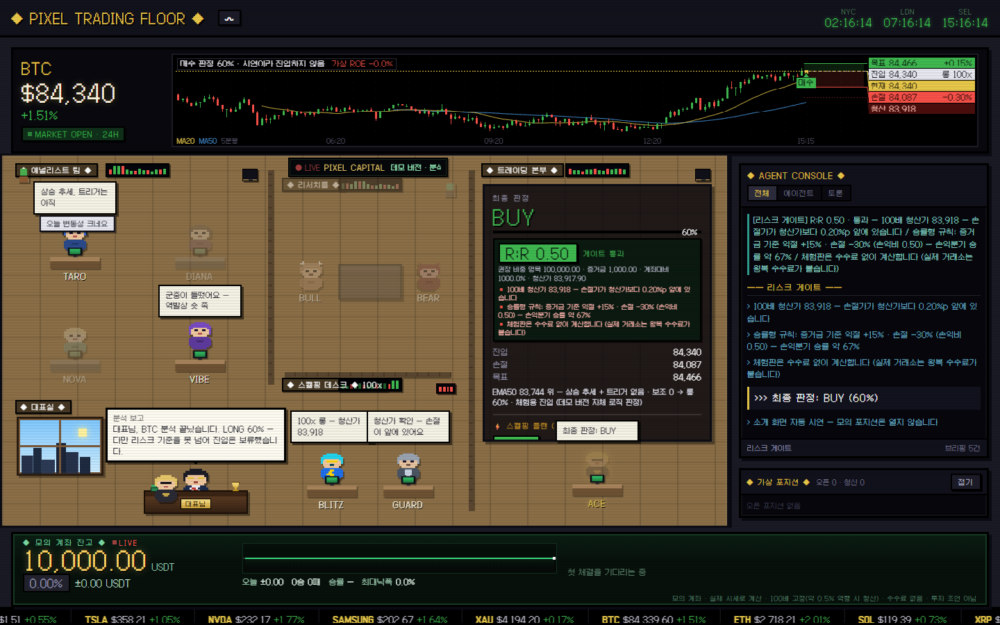

13명이 각자 AI로 생각합니다
TARO는 차트, DIANA는 수급, NOVA는 뉴스, VIBE는 심리. 같은 시각의 데이터를 각자 전문 분야로 읽고 브리핑을 씁니다.
애널리스트 네 명이 차트·수급·뉴스·심리를 나눠 보고, 매수파와 매도파가 토론하고, 리스크 위원회와 PM이 결재해야 판정이 나옵니다. 아래에서 바로 한 번 맡겨 보세요 — 진입가·목표가·손절가를 차트에 그려 드립니다.

LIVE데모 버전 화면 — PC에서는 여기서 90초마다 BTC를 분석하는 모습을 볼 수 있어요*실시간 뉴스 분석과 AI 기능이 빠진 데모 버전입니다 (AI 엔진 대신 자체 트레이딩 로직)
Tauric Research가 공개한 논문 「TradingAgents: Multi-Agents LLM Financial Trading Framework」의 투자 회사 구조 — 애널리스트 팀 → 리서처 토론 → 트레이더 → 리스크 관리 팀 → 매니저 — 를 그대로 가져와, 픽셀 사무실의 AI 직원 13명이 역할을 나눠 맡습니다.
PIXEL TRADING FLOOR는 공개된 논문과 오픈소스 구조를 바탕으로 따로 만든 프로그램이며, Tauric Research와 제휴 관계가 없습니다.
Multi-Agents LLM Financial Trading Framework
출처: github.com/TauricResearch/TradingAgents · 스타 수 2026-10-01 기준
캔들·이동평균·RSI·MACD로 추세와 지지·저항을 읽습니다. 단타는 실제로 체결되는 무기한 차트 기준.
공포탐욕지수·펀딩비 같은 심리 지표와 뉴스 제목의 여론으로 군중의 쏠림을 봅니다.
최신 뉴스 헤드라인을 읽고 호재·악재가 가격에 미칠 영향을 판단합니다.
시가총액·가격 위치·밸류에이션 같은 기본적 데이터로 지금 가격이 싼지 비싼지 따집니다.
살 이유를 모아 가장 강한 매수 논거를 세우고 BEAR의 반론을 되받아칩니다.
팔 이유를 모아 가장 강한 매도 논거를 세우고 BULL의 근거를 하나씩 반박합니다.
모든 분석과 토론을 종합해 방향·확신도·진입가·손절가·목표가를 정합니다.
기회를 놓치는 비용을 먼저 보고 공격적인 대안을 냅니다.
두 주장을 인용해 어디까지 맞는지 가리고 절충안을 냅니다.
자본 보존과 최악의 경우(꼬리위험)를 먼저 봅니다.
리스크 위원회 의견을 모아 계획을 승인·수정(비중 조정)·기각합니다.
판정과 이유가 리포트 파일로 남고 모의 계좌에 기록됩니다.
스캘핑 모드에서 몇 시간 안의 단타 자리 — 진입가·손절가·목표가 — 를 잡습니다.
레버리지 청산가를 먼저 계산해, 손절보다 청산이 먼저 오는 계획을 걸러냅니다.
출처: github.com/TauricResearch/TradingAgents · arXiv 2412.20138 논문 도식을 참고해 다시 그렸습니다
위 구조대로 판정 하나가 다섯 단계 결재를 거칩니다. 스크롤하면 단계마다 담당 직원이 켜지고, 실제 버전 리포트 원문이 흘러갑니다.
TARO는 차트, DIANA는 수급(미결제약정), NOVA는 뉴스, VIBE는 군중 심리. 같은 시각의 데이터를 각자 전문 분야로 읽고 브리핑을 올립니다.
실제 버전에서는 네 명이 각자 AI(Claude·ChatGPT)로 분석합니다BULL은 살 이유를, BEAR는 팔 이유를 찾아 두 라운드에 걸쳐 서로 반박합니다. 한쪽 근거만 보고 들어가는 실수를 막는 장치예요.
토론을 들은 ACE가 롱·숏·관망과 확신도, 진입가·손절가·목표가를 냅니다. 스캘핑 모드에서는 BLITZ가 단타 자리를 잡고 GUARD가 레버리지 청산가를 먼저 계산합니다.
RISKY는 기회를, SAFE는 청산까지 거리와 반대 근거를, NEUTRAL은 둘을 종합합니다. 손절보다 청산가가 먼저 오는 계획은 여기서 걸러집니다.
PM이 최종 결재합니다. 승인된 판정은 모의 계좌에 포지션으로 기록되고, 실시간 시세로 익절·손절·청산까지 정산됩니다. 데모 버전에서는 실제 주문이 나가지 않습니다.
비트코인은 물론 테슬라·엔비디아 같은 미국 주식, 삼성전자·SK하이닉스, 금까지 넣어 보세요. 직원들이 매수·매도를 판정하면 차트에 진입가·목표가·손절가가 그려지고, 모의 잔고 10,000 USDT로 실시간 손익이 움직입니다.
실시간 뉴스 분석과 AI 기능이 빠진 데모 버전입니다AI 엔진 대신 자체 트레이딩 로직으로 판정해요. 실제 버전은 AI 직원 13명이 실시간 뉴스까지 읽고 토론하는 훨씬 더 강력한 분석 성능과 자동 운영·급변동 감시·리플레이·성적표·멀티 거래소 전광판 같은 추가 도구를 지원하며, 하단 자료실에서 받을 수 있어요.
체험이 빨리 끝나도록 100배 고정·수수료 없이 계산합니다. 100배는 가격이 약 0.5%만 반대로 가도 증거금 전액이 청산되는 배율이라 실제 매매라면 매우 위험합니다.
실제 버전은 직원 13명이 각자 AI로 시장을 읽고, 서로 반박하고, 결재까지 합니다. Claude Pro·Max나 ChatGPT(Codex) 유료 요금제를 구독 중이라면 추가 비용 없이 본인 요금제로 바로 AI 분석이 켜져요. PC에 설치해 쓰는 프로그램이라 하단 텔레그램 자료실에서 무료로 받을 수 있습니다.
TARO는 차트, DIANA는 수급, NOVA는 뉴스, VIBE는 심리. 같은 시각의 데이터를 각자 전문 분야로 읽고 브리핑을 씁니다.
NOVA가 실시간 뉴스 헤드라인을 읽고 호재·악재를 판정에 넣습니다. 숫자만 보는 규칙으로는 못 하는 일입니다.
BULL과 BEAR가 서로 반박하고, 리스크 위원회 세 명과 PM이 결재해야 판정이 나옵니다. 판정마다 이유가 문장으로 남습니다.
SK하이닉스·삼성전자는 KRX 원화 정규장과 USDT 무기한 선물을 함께 봅니다. 환율·거래소별 선물 가격·괴리·해외 상장까지 한 화면에 모아 24시간 차트 기준으로 판단합니다.
정해 둔 주기마다 알아서 분석하고, 대표실에 보고하고, 급변동은 감시해서 텔레그램으로 알려 줍니다. 거래소 API를 연동하면 실제 거래소 자동매매로도 이어갈 수 있습니다.
분석마다 리포트 파일이 남고, 성적표·리플레이·판정 카드로 다시 볼 수 있습니다. 내 PC에서만 돌고 밖으로 보내지 않습니다.
TARO · 차트BTC는 SMA20·50 위의 상승 추세지만 MACD 히스토그램이 음수로 모멘텀은 둔화 중입니다. 83,000~84,000 조정 구간이며 82,563 이탈 여부가 관건입니다.
VIBE · 심리·뉴스ETF로 돈이 쏟아지는데도 8만 3,000달러 부근에서 '털썩' 주저앉았다는 헤드라인과 24시간 +0.13%의 정체는, 유입 대비 가격 반응이 약하다는 뜻이라 매수세가 소화되지 못하거나 상단에서 매물이 나오고 있을 가능성을 시사합니다.
직원마다 이런 브리핑을 세 문단 안팎으로 쓰고, 토론·리스크 심사·최종 판정까지 한 편의 리포트로 남깁니다.
AI 실제 버전은 텔레그램 자료실에서만 배포합니다. 압축을 풀고 내가 쓰는 AI의 실행 파일만 더블클릭하면 켜집니다.
실행_클로드.cmd, ChatGPT는 실행_챗GPT.cmd내 AI 구독을 연결하면 강력한 AI 분석 기능을 쓸 수 있고, 구독을 하지 않더라도 챌린지를 통해 신호를 받아보실 수 있습니다.
거래소 API를 연동하면 AI 분석 결과를 실제 거래소 자동매매로도 이어갈 수 있습니다.거래소 API 키를 직접 연동해야 쓸 수 있고, 1회씩 진입 방식·자동매매 ON/OFF 등을 선택할 수 있습니다. 투자 판단과 손실의 책임은 본인에게 있습니다.
Windows PC 기준 · AI 분석은 Claude Pro·Max 또는 ChatGPT(Codex) 유료 요금제 연결 필요 · AI 분석만 쓸 때는 API 키·거래소 키 불필요
시세는 키 없는 공개 API에서 읽기만 하고, 직원들은 본인 Claude 또는 ChatGPT(Codex) 로그인으로 분석합니다. 분석 결과는 PC의 reports 폴더에 파일로 남고 밖으로 보내지 않습니다. 자동매매를 연동한 경우에만 주문이 내가 연결한 거래소로 전달됩니다.
AI 분석 기능이나 리치 트레이딩 애널라이저를 별도의 프로그램으로 직접 만들 필요 없이, 리치 트레이딩 룸이 잡은 실시간 포지션을 텔레그램 알림으로 받아 보며 한 계좌로 계속 이어서 쌓아 가는 수익 쌓기 챌린지입니다.
1,000달러 챌린지는 영상에서 보여 드리는 AI 트레이딩 챌린지이고, 이와 별도로 운영되는 실시간 챌린지도 종목별로 진행 중입니다. 참가 신청은 카카오톡 채널 1:1 채팅으로 받습니다.
아니요. 페이지 속 화면은 실시간 뉴스 분석과 AI 기능이 빠진 데모 버전으로, AI 엔진 대신 자체 트레이딩 로직을 탑재했습니다. 브라우저가 바이낸스 공개 시세를 직접 받아 정해진 알고리즘으로 계산하고, 직원 말풍선은 그 결과를 문장으로 옮긴 것입니다. AI 직원 13명이 각자 생각하고 토론하는 건 자료실의 실제 버전입니다.
횟수 제한 없이 마음껏 쓸 수 있습니다. 분석할 때마다 실시간 시세·차트·수급 지표를 새로 받아 계산하고, 열린 모의 포지션은 그 뒤에도 실시간으로 정산됩니다. 모의 계좌와 매매 내역은 이 브라우저에만 저장됩니다. 실시간 뉴스까지 읽는 AI 분석을 쓰려면 텔레그램 자료실에서 실제 버전을 받아 내 PC에 설치하세요 — Claude나 ChatGPT(Codex)를 구독 중이라면 추가 비용도 없습니다.
여러 시간대의 신호를 겹쳐 점수를 매기는 다중 요인 알고리즘입니다. ① 추세 필터 — 1시간봉 EMA50 대비 가격 위치(±0.1% 밴드)로 방향을 정합니다. ② 진입 트리거 — 5분봉 72개(6시간) 가격 박스 돌파, 볼린저 밴드(20, 2σ) 이탈 후 재진입을 봅니다. ③ 모멘텀 게이트 — 5분 RSI(14, 와일더)가 롱 75 이상·숏 25 이하면 추격으로 보고 확신도에서 10점을 뺍니다. ④ 보조 투표 — 공포탐욕지수·펀딩비·상위 트레이더 롱숏 비율은 쏠린 반대편에, 미결제약정×가격 흐름(신규 롱·신규 숏·숏 커버·롱 정리)은 새로 들어오는 돈 쪽에 0.5표씩 더합니다. ⑤ 확신도 = 50 + 10 × (추세 + 트리거 + 보조 합) − 추격 페널티, 50~85%로 제한합니다. 신호가 약해도 관망하지 않고 추세 쪽으로 ‘체험용 진입’을 표시합니다. ⑥ 리스크 게이트가 손절가보다 청산가가 먼저 오는 계획을 거르고, 알고리즘 모드는 PM이 한 번 더 심사해 과열(RSI 70/30)이나 확신도 60% 미만이면 증거금을 절반으로 줄입니다. 체험이 빨리 끝나도록 100배 고정으로 증거금 +15%에서 익절, −30%에서 손절하며, 100배는 가격이 약 0.5%만 반대로 가도 증거금 전액이 청산되는 배율입니다.
매수·매도 판정이 나오면 진입가에서 목표가까지는 초록, 손절가까지는 빨강으로 칠해 보여 줍니다. 오른쪽 가격표에 목표·진입·현재·손절·청산가가 붙고, 보유 중이면 왼쪽 위에 실시간 손익이 표시됩니다.
이 브라우저에만 저장됩니다. 다른 기기와 공유되지 않고, 브라우저 데이터를 지우거나 [모의 계좌 초기화]를 누르면 10,000 USDT로 돌아갑니다. 데모 버전에서는 실제 주문이 나가지 않습니다.
내 PC에서 작은 서버가 돌고 직원 13명이 본인 Claude 또는 ChatGPT(Codex) 구독 로그인으로 각자 분석합니다. AI 분석만 쓸 때는 API 키·거래소 키·결제 수단이 필요 없고, 결과는 PC의 reports 폴더에 파일로 남습니다.
실제 버전은 거래소 API 키를 직접 연동하면 AI 분석 결과를 실제 거래소 자동매매로 이어갈 수 있습니다. 1회씩 진입하는 방식, 자동매매 ON/OFF 등을 선택할 수 있고, 데모 버전에서는 실제 주문이 나가지 않습니다. 투자 판단과 손실의 책임은 본인에게 있습니다.
네. 실제 버전은 텔레그램 자료실에서 무료로 받고, AI 분석은 내 PC에서 본인 Claude 또는 ChatGPT(Codex) 로그인으로 돌아가 이미 쓰고 있는 요금제의 사용량 안에서 처리됩니다. AI 분석에는 API 키나 별도 결제가 필요 없고, 요금제별 사용량 한도는 그대로 적용됩니다.
왼쪽(좁은 화면은 왼쪽 아래 버튼)의 맨 위는 영상에서 보여 드리는 AI 트레이딩 챌린지(1,000달러 챌린지, 실계좌)입니다. 영상에서 보여 드리는 챌린지 현황이라, 영상에서 공개한 날의 잔고만 점으로 찍히고 점 사이의 일별 변동은 표시되지 않습니다. 매매 내역은 확인된 거래만 아래에 올립니다. 그 아래 "신호방 따라가기"는 텔레그램 방들이 실시간으로 낸 포지션을 10,000 USDT 가상 계좌에 익절·손절 모두 그대로 반영한 기록으로, 10월 1일부터 새로 한 계좌에 이어서 쌓고 있습니다(수수료 미반영 · 실제 계좌 수익이 아님). 아래 체결 목록은 최근 익절만 보여 드리고, 잔고·승패·수익률은 손절을 포함한 전체 기준입니다. 두 기록 모두 미래 수익을 보장하지 않습니다. 오른쪽은 텔레그램 커뮤니티 소통방 대화이고, 챌린지 참가 신청은 카카오톡 채널로 받습니다.